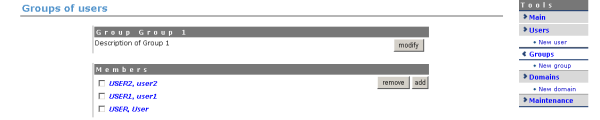

| Prev | Chapter 2. Administration Area | Next |
You can use the groups section to categorise users if you wish. You may want to use this feature to help with Access Control for example if you have more than one user that you would like to manage an Event you could make a group of Managers for each event and then assign each set to an Event as apposed to adding each individual user.
To create a new group use the 'new group' feature in the Tools menu . You will be asked for a group name and a description.

You can then start to add or remove users to the group.

You can assign a group of users the same was as you can individual users to Access Control. Once your group(s) are created you can use the 'Groups' option to find a particular group to continue adding and removing users or to modify the group details.